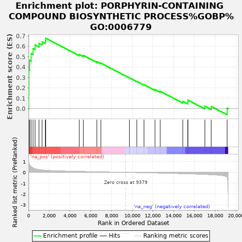

| | | Dataset | rankedList |
| Phenotype | NoPhenotypeAvailable |
| Upregulated in class | na_pos |
| GeneSet | PORPHYRIN-CONTAINING COMPOUND BIOSYNTHETIC PROCESS%GOBP%GO:0006779 |
| Enrichment Score (ES) | 0.67838323 |
| Normalized Enrichment Score (NES) | 2.1288848 |
| Nominal p-value | 0.0 |
| FDR q-value | 0.005677279 |
| FWER p-Value | 0.116 |
Table: GSEA Results Summary

Fig 1: Enrichment plot: PORPHYRIN-CONTAINING COMPOUND BIOSYNTHETIC PROCESS%GOBP%GO:0006779
Profile of the Running ES Score & Positions of GeneSet Members on the Rank Ordered List
| PROBE | GENE SYMBOL | GENE_TITLE | RANK IN GENE LIST | RANK METRIC SCORE | RUNNING ES | CORE ENRICHMENT | | 1 | FECH | | | 19 | 0.968 | 0.1338 | Yes |
| 2 | SRRD | | | 32 | 0.869 | 0.2542 | Yes |
| 3 | HMBS | | | 34 | 0.856 | 0.3733 | Yes |
| 4 | SPTA1 | | | 104 | 0.682 | 0.4647 | Yes |
| 5 | UROD | | | 244 | 0.534 | 0.5318 | Yes |
| 6 | ALAS2 | | | 434 | 0.406 | 0.5785 | Yes |
| 7 | SLC25A39 | | | 630 | 0.324 | 0.6134 | Yes |
| 8 | ABCB6 | | | 1006 | 0.252 | 0.6290 | Yes |
| 9 | ALAD | | | 1305 | 0.216 | 0.6436 | Yes |
| 10 | IBA57 | | | 1622 | 0.192 | 0.6539 | Yes |
| 11 | CPOX | | | 1659 | 0.190 | 0.6784 | Yes |
| 12 | PPOX | | | 4896 | 0.086 | 0.5220 | No |
| 13 | UROS | | | 5289 | 0.077 | 0.5124 | No |
| 14 | TMEM14C | | | 6588 | 0.052 | 0.4522 | No |
| 15 | SLC25A38 | | | 6980 | 0.045 | 0.4381 | No |
| 16 | TSPO | | | 9733 | -0.007 | 0.2960 | No |
| 17 | RSAD1 | | | 10446 | -0.021 | 0.2619 | No |
| 18 | ATPIF1 | | | 11139 | -0.035 | 0.2307 | No |
| 19 | SLC11A2 | | | 12199 | -0.057 | 0.1836 | No |
| 20 | IREB2 | | | 12703 | -0.069 | 0.1670 | No |
| 21 | ALAS1 | | | 14886 | -0.120 | 0.0703 | No |
| 22 | COX15 | | | 15371 | -0.133 | 0.0637 | No |
| 23 | NFE2L1 | | | 15375 | -0.133 | 0.0821 | No |
| 24 | COX10 | | | 17011 | -0.186 | 0.0230 | No |
| 25 | FXN | | | 17619 | -0.212 | 0.0209 | No |
| 26 | SUCLA2 | | | 19160 | -0.461 | 0.0051 | No |
Table: GSEA details [plain text format]
Fig 2: PORPHYRIN-CONTAINING COMPOUND BIOSYNTHETIC PROCESS%GOBP%GO:0006779: Random ES distribution
Gene set null distribution of ES for PORPHYRIN-CONTAINING COMPOUND BIOSYNTHETIC PROCESS%GOBP%GO:0006779